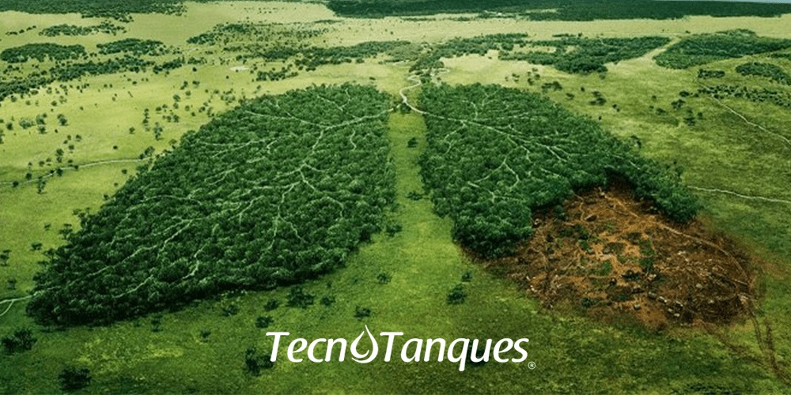
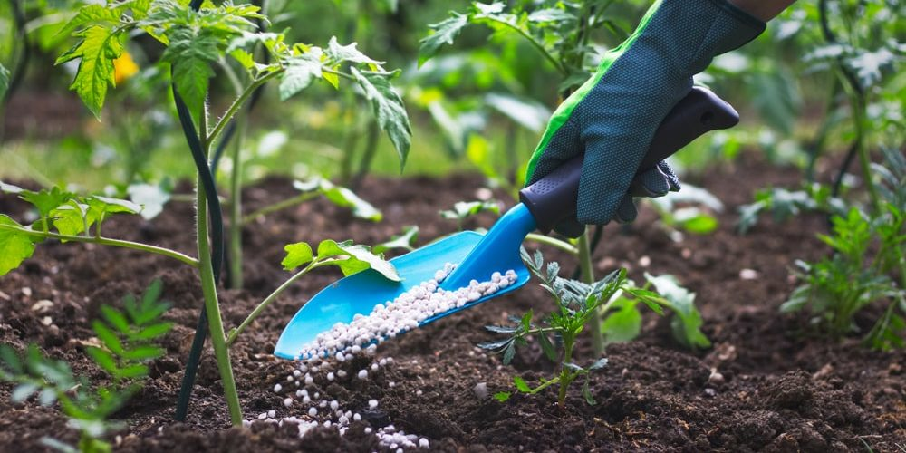
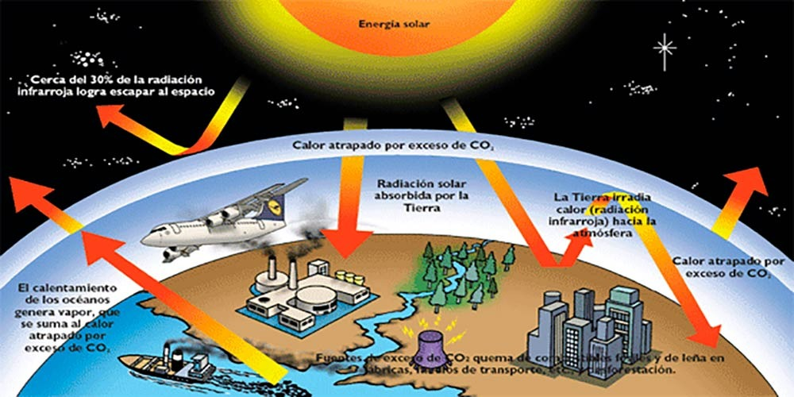
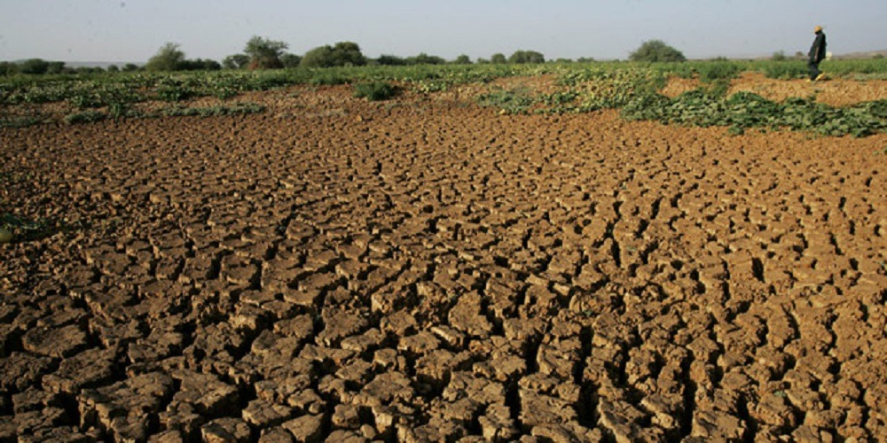
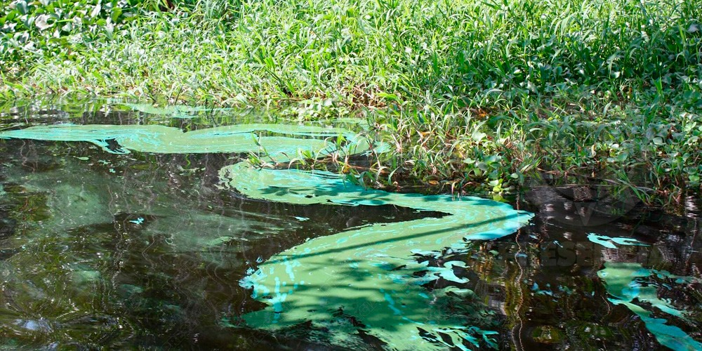
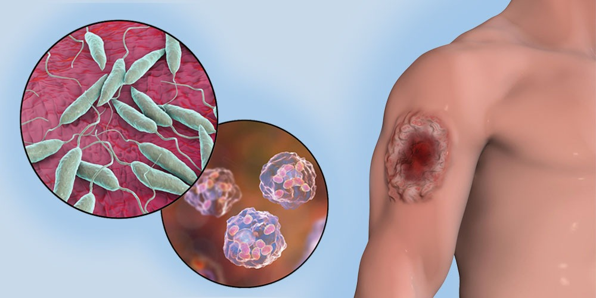
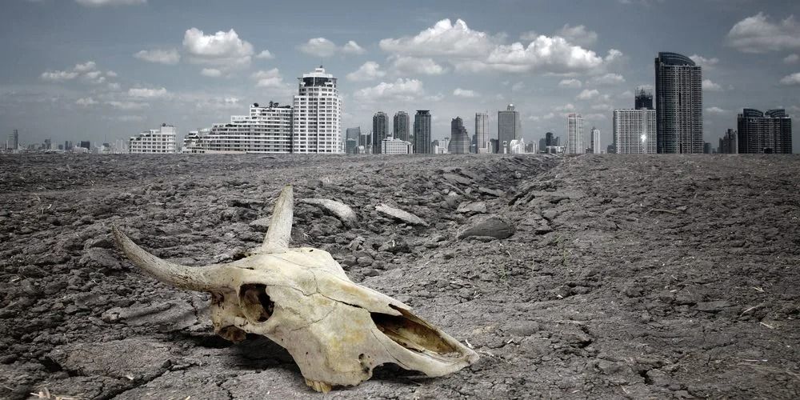

Deforestacion
Los impactos ambientales de la deforestación incluyen el daño a los hábitats, su fragmentación y la sucesiva pérdida de biodiversidad; la alteración de los ciclos del agua, la erosión del suelo y la desertificación. La deforestación puede tener graves consecuencias socioeconómicas: por ejemplo, puede amenazar los medios de vida, la cultura y la supervivencia de las poblaciones que dependen de los bosques, incluidos los pueblos indígenas; debilitar las economías locales y nacionales; provocar conflictos sociales por los recursos naturales; aumentar el impacto de los desastres naturales; y producir desplazamientos de la población.
Uso de productos quimicos y pesticidas
Los pesticidas contaminan el aire, el agua y el suelo, afectando las plantas y la fauna. Esto puede provocar exposiciones agudas, envenenamiento y posiblemente la muerte de organismos que no son el objetivo previsto de estos químicos. Tambien los pesticidas afectan a los insectos, aves y animales acuáticos, lo que puede causar una disminución de la biodiversidad.La pérdida de especies afecta negativamente los ecosistemas y su capacidad para mantener un equilibrio natural..
Calentamiento Global
La emisión excesiva de gases de efecto invernadero, como el dióxido de carbono (CO₂), contribuye al calentamiento global. Esto provoca cambios climáticos, como el aumento de las temperaturas, el derretimiento de los glaciares y el aumento del nivel del mar.
Degradacion del suelo
La contaminación del suelo con productos químicos tóxicos, como pesticidas y metales pesados, afecta la fertilidad y la calidad del suelo. La erosión y la desertificación también son consecuencias de la degradación del suelo..
Escases de Agua Dulce
La contaminación de ríos, lagos y acuíferos reduce la disponibilidad de agua potable. El uso excesivo y la contaminación del agua afectan la biodiversidad acuática y la salud humana.
Aparicion de enfermedades
La exposición a contaminantes ambientales puede causar enfermedades respiratorias, cardiovasculares y cáncer. La contaminación del aire, el agua y los alimentos afecta directamente la salud de las personas.
Extincion de especies naturales
La degradación del medio ambiente conduce a la pérdida de hábitats naturales. Esto afecta a las especies animales y vegetales, aumentando el riesgo de extinción
